They're both excellent, and they're not the same. After enough hours in each, I stopped asking “which is better” and started asking “which do I reach for right now.” The answer changes by task — and once you know the pattern, you stop wasting the good tool on the wrong job.
Ten tasks below. Each has the exact copy-paste prompt and my pick between the two. The prompts work on either, so even if you only have one, you're covered — the winner is just where I'd spend the tokens if I had both open.
The Ten
Every Prompt, Copy-Paste Ready
01 / 10Long docs
Summarize Without Lying
"Summarize this in 5 bullets, then list
what you're NOT sure about: [paste]"
Reach for Claude on long text — it holds more of the document without dropping the middle. The uncertainty list is where the hallucinations own up before you paste them into something real.
02 / 10Ideas
Go Wide
"20 ideas, safe to unhinged. Don't
self-censor. Number them, no explanations."
Reach for ChatGPT to brainstorm — it ranges wider before it converges. “Safe to unhinged” gives you the boring ideas and the one you'd never have written down.
03 / 10Code
Bugs First
"Review this. Bugs first, style second,
and say what you'd change: [code]"
Reach for Claude on code. Ordering by severity stops it burying the one real bug under ten cosmetic nitpicks — the failure mode of every “review my code” prompt.
04 / 10Facts
One Line, One Source
"Answer in one line, then tell me exactly
where I'd verify it."
Reach for ChatGPT when it can search the web. The verify-line is the safety rail — it keeps you from trusting a confident one-liner that happens to be wrong.
05 / 10Tone
Three Voices
"Rewrite this 3 ways: formal, casual,
blunt. Same meaning: [text]"
Either tool handles this. Three versions in one shot beats asking for “make it better” and hoping — you pick the one that fits instead of describing it.
06 / 10Data
Table Only
"Pull every date, name and number into a
markdown table. Nothing else: [paste]"
Reach for Claude — it holds a strict output format without drifting back into prose halfway down. “Nothing else” is the instruction that actually sticks.
07 / 10Writing
Hook Me
"Write the first 150 words. Make me need
to read the next line. Then stop."
Reach for ChatGPT for a cold open — it commits to a voice faster. Capping it at 150 words forces a real hook instead of a warm-up paragraph.
08 / 10Reasoning
Show the Work
"Think step by step. Show each step. Then
give the answer on its own line."
Reach for Claude on multi-step logic. Visible steps let you catch the wrong turn — the answer on its own line means you can copy it without the working.
09 / 10Teaching
Explain It Simple
"Explain [topic] to a smart 12-year-old.
One analogy, zero jargon."
Either tool. The age cap and the one-analogy limit force real clarity instead of a glossary of terms you'd have to look up anyway.
10 / 10Format
Strict JSON
"Return ONLY valid JSON in this shape:
[shape]. No prose, no markdown."
Reach for Claude when the output feeds code — it breaks strict format far less often. If you're parsing the result, that reliability is the whole game.
The Slides
All Twelve, Full Size
The full set at full size. Save the ones you'll actually use — or screenshot the lot.
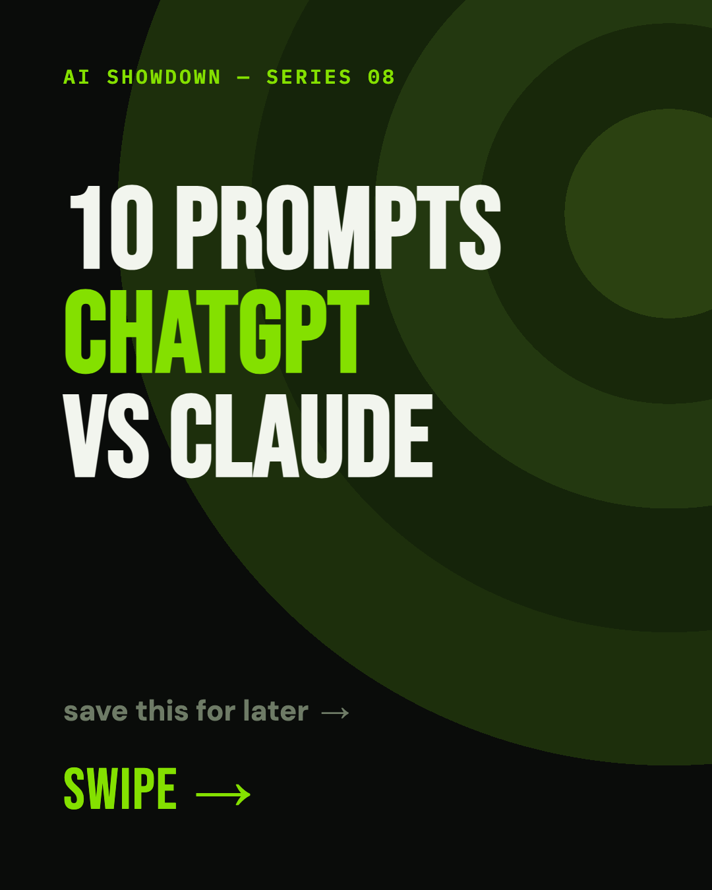
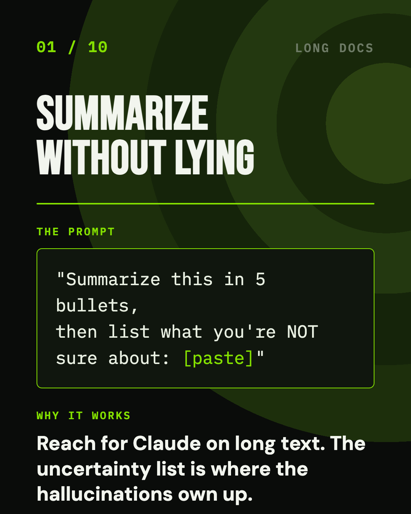
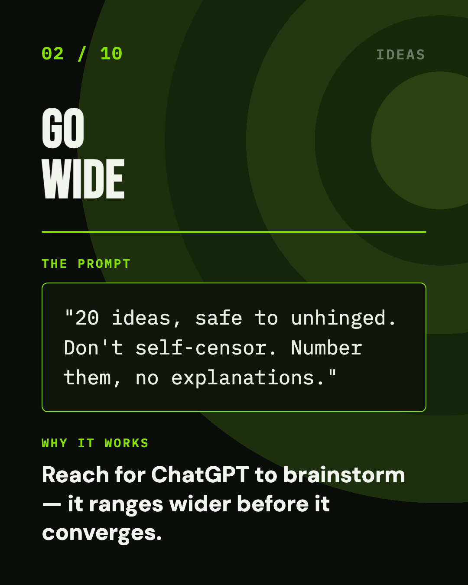
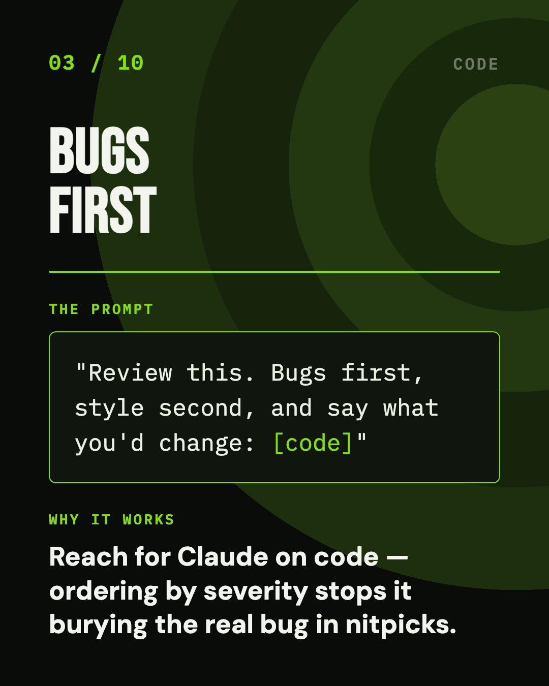
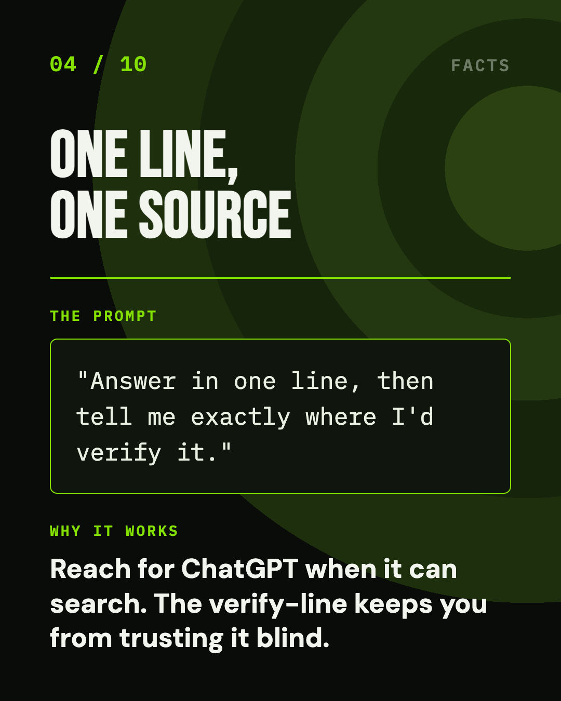
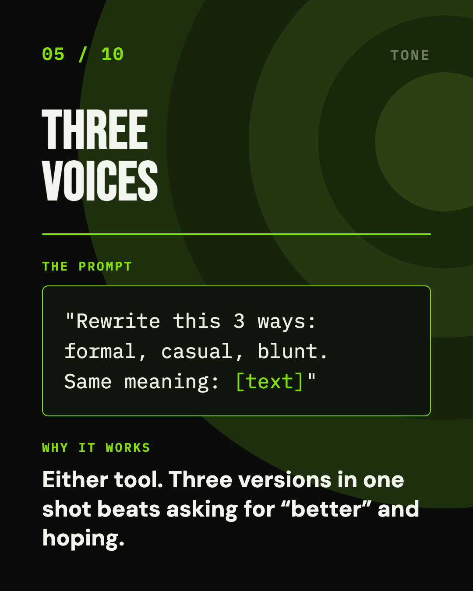
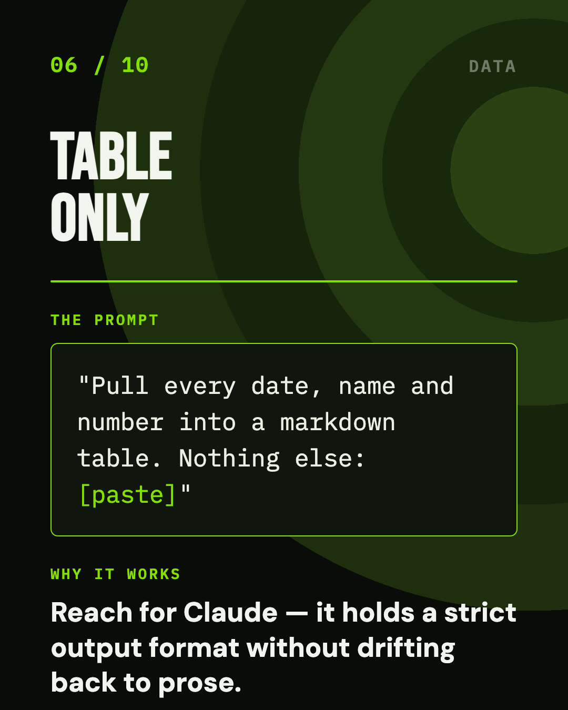
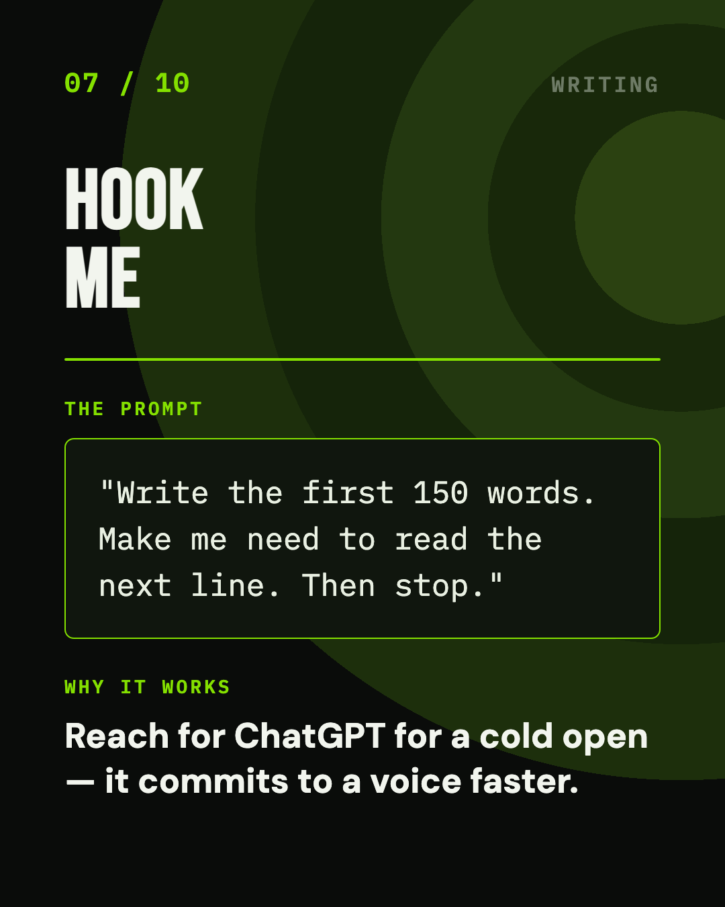
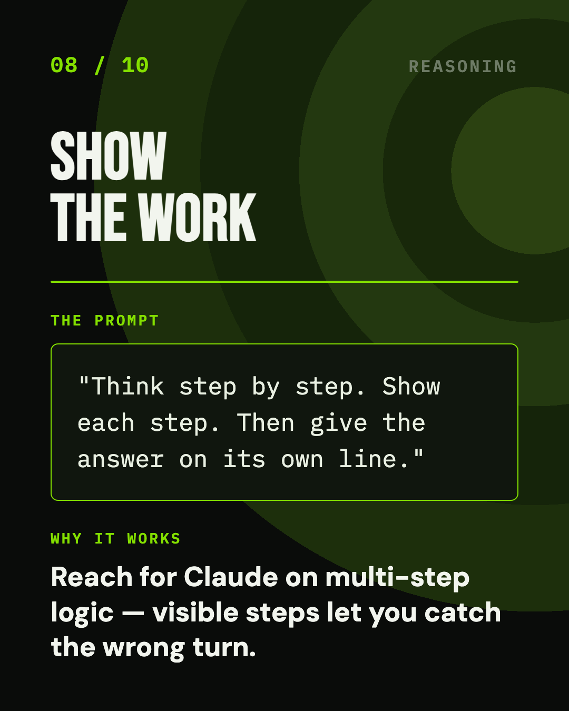
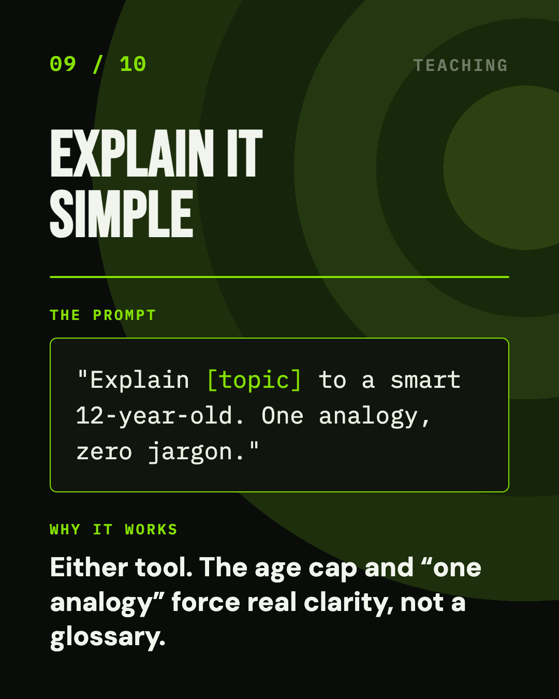
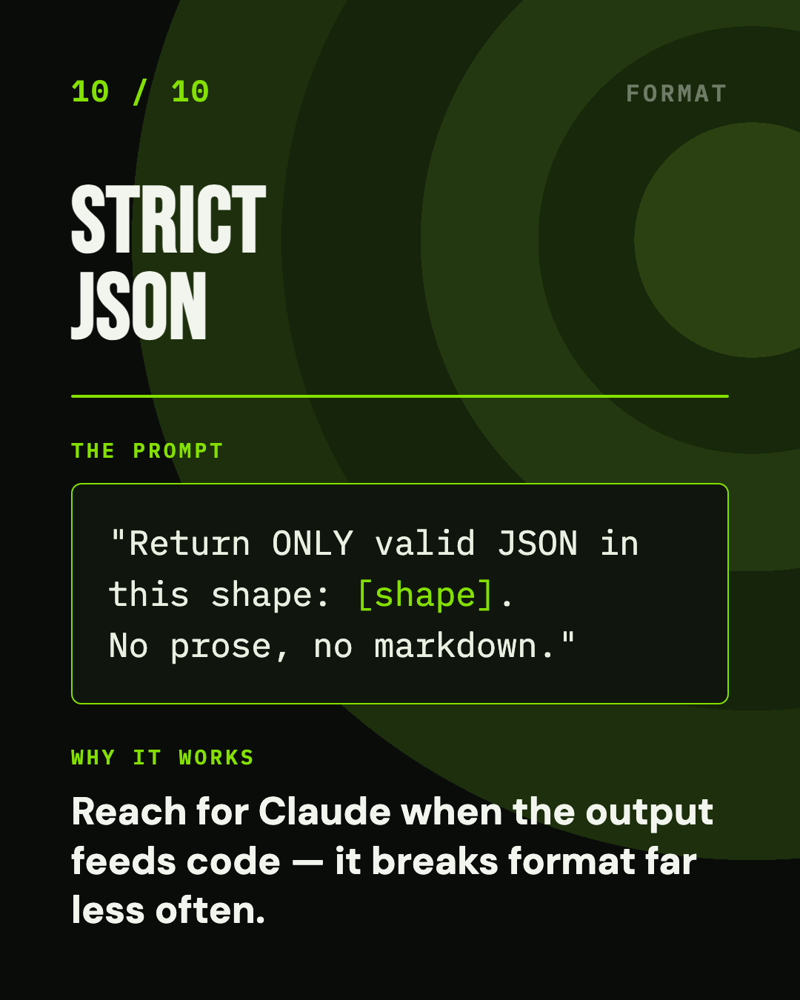
Twelve slides · 1080×1350